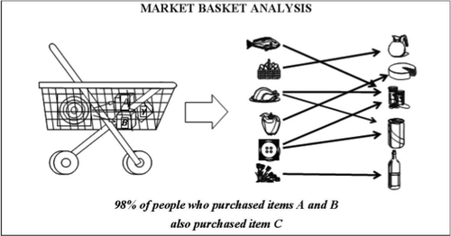
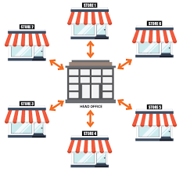
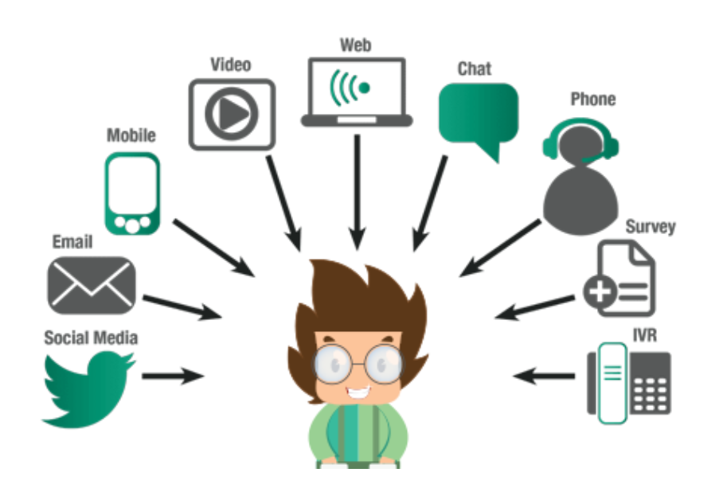
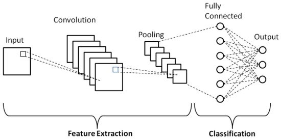

Case Studies
Market Basket Analysis for Retail Insights

Analyzed 500K+ retail transactions with the Apriori algorithm to uncover product associations, segment item pairs by revenue, time, and region, and drive targeted cross-selling and promotional strategies.
Key Concepts: Apriori algorithm; Associate Rule Mining; Cross-selling Strategies
Tools: Python - numpy, pandas, seaborn, apirori, association rules
View on GitHubAI-Driven Customer Service Impact on Brand Perception

Used multiple linear regression to evaluate AI’s impact on customer satisfaction, uncovering key drivers, debunking generational gaps, and linking AI empathy to a 20.4% variance in brand perception to guide strategy.
Key Concepts: Statistical Analysis; Predictive Modelling; Correlation Analysis
Key Concepts: Statistical Analysis; Predictive Modelling; Correlation Analysis
View on GitHubMulti-Store Bike Store Analytics Using SQL

Leveraging advanced SQL on a multi-store database, identified revenue drivers, inventory gaps, and seasonal trends, delivering nine recommendations to boost efficiency and reduce a 15% late shipment rate.
Key Concepts: Inventory Management; Reveue Enchancement; Operational Efficiency
Key Concepts: Inventory Management; Reveue Enchancement; Operational Efficiency
View on GitHubDecoding Content Trends: A Decade of Netflix
Built an interactive Power BI dashboard analyzing 8.5K+ Netflix titles (2010–2020) to define 5 KPIs and reveal insights into genres, release trends, and global strategy using DAX, slicers, and dynamic filters.
Key Concepts: Visualisations; Dashboard Generation; Interactive Visuals
Key Concepts: Visualisations; Dashboard Generation; Interactive Visuals
View on GitHubMarketing Channel Effectiveness Analysis for FoodFusion

Analyzed FoodFusion’s campaign data with statistical tests and logistic regression, uncovering subscription and retention drivers
Key Concepts: Subscription & Retention Analysis; Marketing Channel Optimization
Key Concepts: Subscription & Retention Analysis; Marketing Channel Optimization
View on GitHubDecoding Artworks with CNN-Based Image Classification

Built CNN models including ResNet50 and ConvNeXt for artwork analysis, improving accuracy by 12.5% through data augmentation, hyperparameter tuning, and achieving 74.4% accuracy with 54.89% better validation performance.
Key Concepts: Convolutional Neural Networks; Data Augmentaion; Hyperparameter Tuning
Key Concepts: Convolutional Neural Networks; Data Augmentaion; Hyperparameter Tuning
View on GitHub